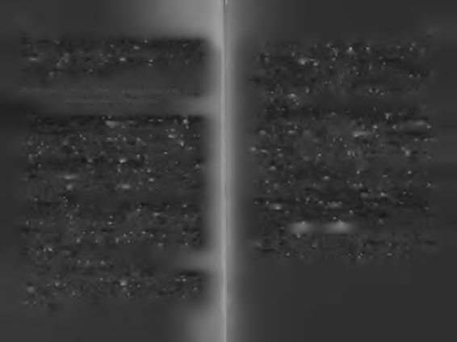
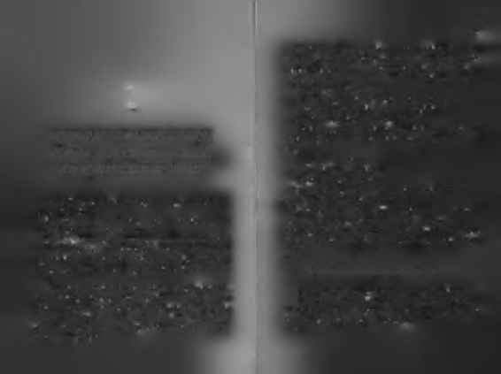
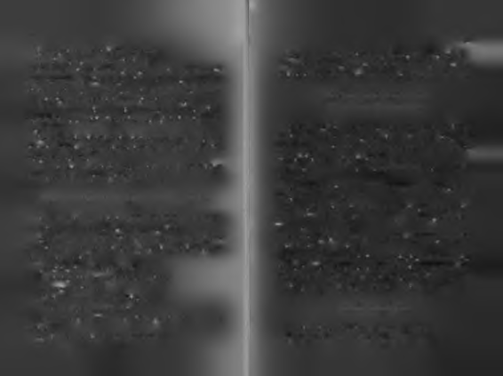
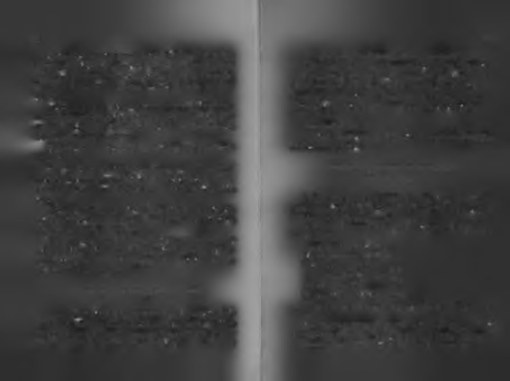

nü de, haddini de bilir. Mantıksız isteklere hükmetmeyi ve
Bu kitabın öne rdiğ i ba şa rı m odeli:
akla itaat etmeyi erdem sayar.
İk a r u s 'u n tu tku su , D a ida lo s'un te kn iğ i, T b e s s e u s 'u n c e s a re ti!
Kalbim ise İkarus'tur; sınır tanımaz, bedelleri de ödülleri
de kaale almaz. Hesapsız ve eyvallahsızdır. Cesur olmak za
Bu kitap İkarus'un tutkusu, Daidalos'un tekniği ile Thes-
manı geldiğinde korkuyu müttefik edinmiş bir aklı "geçici
seus'un cesaretini bir araya getirmeyi amaçlamıştır. Büyük ve
olarak servis dışı" bırakabilir. Alçaktan sürünerek yaşamak
başarılı bir hayat için, önce İkarus gibi tutkulu ve büyük hayaller
tansa yüksekten süzülerek çakılmayı tercih edebilir. Yüksek
kurmak, sonra Daidalos gibi gerçekleştirme araçlarını ve planını
kayalardan okyanusa çivileme atlayan Brezilyalı çocuklar gi
üretmek, en sonunda da Thesseus gibi cesurca mücadele edip sonuç
bidir. Yapılamamışı denemeyi, sınırların ötesine geçmeyi,
almak gerekir.
tutkulu yaşamayı sever.
İkarus'un tutkulu kalbini, Daidalos'un teknik beynini,
Beynim başarısız olmadan başarılı olmanın yollarını arar
Thesseus'un cesur bileğini aynı kişilikte birleştirmiş birinin
ama kalbim başarısızlıktan korkmaz; "Hayat, her halinle yasırtını kim yere getirebilir ki?
şarım seni!" anlayışındadır. Beynim hep "nasıl yapılır"a kafa
Bu kitabın merkezinde üç anahtar kelime var: Tutku, tekyorar, kalbim "ne kadar ileri gidilebilir"e. Beynim içini daha nik ve cesaret! Bu üç kelime kilit başarı faktörleridir.
rahat kontrol edebilmek için sınırlar çizmeyi sever, kalbim ise
Teknik, kişinin bilgisi ve donanımıdır. Tutku, güçlü bir isbir yüksek atlamacı gibi o sınırların üstünden sırt üstü ileri at
teği ifade eder. Cesaret ise kendine güvenerek ileri atılmaktır.
lamayı!
Bilgi cesaretin aklıdır, cesaret aklın provokatörü. Tutku ise
Eğer kendinizi değiştirmek elinizde olsaydı olmak istediğiniz
başarının yakıtıdır.
karakter hangisi olurdu? İkarus gibi sınırları zorlayarak yaşa
Başarı ile ilgili en büyük sorun, bu üç şeyin çoğu kez aynı
kişide bir araya gelmemiş olmasıdır. Çoğu bilgili cesur değilmak mı isterdiniz, yoksa Daidalos gibi kurallara uygun ve dir, çoğu cesur ise bilgili olmayı küçümser. Bazı tutkulular
güvenli bir hayat yaşamayı mı? Yoksa labirentte kaybolmuş
bilgili değildir, çok donanımlı bazı kişiler ise tembeldir.
hayat şaşkını "kurban"lardan mı olmak isterdiniz? Ya da o
Donanım ile cesaret de çoğu kez aynı kişide aynı oranda
kurbanları kurtaran bir "kahraman" mı?
birleşmez. İkarus'un cesareti donanımından daha güçlüydü,
Birini seçebileceğiniz gibi, "ortaya karışık" bir tasarım da
Daidalos'un ise donanımı cesaretinden. Kurbanların donanıyapabilirsiniz kendinize!
mı da cesareti de yeterince yoktu. Thesseus hem "hedefinin
gerektirdiği kadar" donanıma sahipti hem de düşmanından
korkmayacak kadar cesarete.
Başarıya yürüyen bir insanın bir bacağı donanım ise, di
ğeri de cesarettir. İnsan donanımsız olursa üzerine bastığı bacağı

14
15
kendisini taşıyamaz, cesur olmazsa diğer ayağını bir adım ileri ata
Kitabın ikinci mesajı: Eğer önce içinde yaşadığınız kafesten çımaz. Tutku ise içteki ilerleme isteğidir. Tutku yoksa, kişi ol
kar, sonra da kafesi kafanızın içinden çıkarabilirseniz, kendi kanat
duğu yerde atalet halinde kalacağı için, cesaret de donanım
larınızla uçabileceğiniz en ileri noktaya gidebilirsiniz.
da bir işe yaramayacaktır.
Bu kitabın "içindekiler", kendi kanatlarıyla uçma becerileri, limitleri ve şekilleri hakkındadır.
Bu hitap b a şa rı lim itle rim iz hakkında: H iç b irim iz lim itsiz değiliz ama şu
Kitapta kendi kanatlarıyla uçabilmek üzerine üç türlü bilandaki lim itle rim ize de mahkûm d e ğiliz.
gi bulacaksınız.
Birincisi, kendi kanatlarıyla uçmanın psikolojik yasaları. Bu
İnsanın başarı limiti tutkusuna, cesaretine ve bilgisine bağlı
bilgi, iç dünyamızı düzenlememiz için. İkincisi, uçarken uyulolarak genişler ya da daralır. Şu andaki limitlerimizle bu kadar ması gereken fizik yasaları. Bunlar da İkarus gibi kanatları yakbaşarabiliyorsak; kendimize eklemeler yaparak, aklımıza mamak için bilinmesi gereken doğa yasaları. Üç üncüsü ise
akıl ekleyerek, cesaretimizi güçlendirerek, tutkumuzu ateşle
sosyal yasalar. Toplumsal hayatta kendi ayakları üzerinde duyerek daha büyük işler başarabilir hale gelebiliriz.
rabilmek ve diğer insanlarla ilişkileri yürütebilmek için iz
İnsanın başarı limiti sabit değil esnektir. "Yapamadıklarımız"
lenmesi gereken sosyal stratejiler.
listesinin önüne "henüz" ibaresi koymak gerekir. Nasıl ki
Kitapta kendi kanatlarıyla uçmak kavramı psikolojik, sosyodün yapamadığımızı bugün yapabiliyorsak, kişisel limit artılojik ve doğa bilimleri boyutuyla ele alınıp bazı soruların cerımına giderek, bugün yapamadığımızı da yarın yapabilir vabı aranmıştır. Bir insan bilgisi, tutkusu ve cesareti ile kendi gü
hale gelebiliriz.
cüne dayanarak nasıl ve nereye kadar ilerleyebilir? İnsan başara
Hiçbirimiz sınırsızlık anlamında "limitsiz" değiliz ama şu anmayacağını sandıklarının sınırını ne kadar zorlamalıdır? Kendi kadaki limitlerimize de mahkûm değiliz. Hayatımız dar geliyorsa, natlarıyla uçarak yükselmek isteyenlerin izlemesi gereken yol hari
kabuklarımızı kırıp hayatımızı bir beden büyütebiliriz. Bü
tası nedir?
yüttükçe de, daha fazla büyütme kapasitesine ulaşabiliriz.
Şimdi Antik Yunan mitolojisinden, Kadim Hint edebiyatı
Sınırımızı zorladıkça başlangıçta aklımıza bile gelmeyen ölna geçelim. Kendi kanatlarıyla uçmak için ilk denemelerini çekleri aşabiliriz.
yapan bir şahin yavrusunun hikâyesine kulak verelim.
Bu kitabın iki temel mesajı var.
Birinci mesajı: Başarınızın limiti sizsiniz!
Tutkunuz, tekniğiniz ve cesaretinizle limiti koyan sizsiniz.
Kendiniz kadar başarılı, kendiniz kadar başarısız olacaksınız. İnsanlar da kitaplar gibidir, nihai değerleri "içindekiler"
kadardır!

17
Sırada, bir an önce kendi kanatlarıyla uçmak için yamp tutuşan bir yavru kuşun hikâyesi var. Kadim Hint öykü kitabı Kehle ve Dimne’ den aldığım bu hikâyeyi, kendi kanatlarıyla ilk uçma denemelerinde yaşanabilecekleri temsil ettiği için seçtim.4
İki şahin severek evlenmişti.
Arazinin en yüksek tepesine kurdular yuvalarını.
Aşklarının görkemli (k)anıtıydı o yükseklik.
Yuvalarını en güzel otlarla süslediler.
Rüzgâr her estiğinde ıslık çalan küçük dallar koydular ke
KENDİ KANATLARIYLA YÜKSELMEK İÇİN
narlarına. Müziksiz mutlu olamayacaklarını düşünenlerden
DOĞANLAR: ROŞLUKTA KANAT AÇMADAN,
diler.
Bir gün bir yavruları oldu.
UÇUP UÇAMAYACAĞINI RİLEMEZSİN!
Mutluluktan "uçuyorlardı!"
Sürekli onu seyrediyorlardı.
Onun büyümesinin hiçbir anını kaçırmak istemiyor, her
Bir çocuğun en büyük avantajı neyi yapamayacağını henüz öğ
hareketini beyinlerine kaydediyorlardı.
renmemiş olmasıdır!
Çok özel bir yavruları olduğunu düşünüyorlardı. Çok ha
Çocuklar bu yüzden sürekli sınırları zorlar, kendi en iyi
reketliydi. Kendine çok güveniyordu. Sınırları zorlamaktan
yapabileceklerini ortaya koymaya çalışırlar.
çekinmiyordu. Gel zaman git zaman yavru şahin büyümeye
Özellikle sürünmekten yürümeye yeni geçmiş çocuklar
başladı. Parlak tüyleri çıkıyordu. Geleceği de parlak görünüher işlerini kendileri yapmak isterler. Kıyafetlerini kendileri yordu.
giymek isterler, tabakları taşımak isterler. Bir şeyin yapılmış
olması değil, o işi kendilerinin yapabilmiş olması onları mutlu
Boşlukta kanat açm adan uçup uçam ayacağını bilem ezsin.
eder.
Her insan kendi kanatlarıyla uçma isteğiyle doğar ancak
Yavru şahin bir an önce "büyük" bir şahin olmak istiyordu.
zamanla kafası "kafeslenerek" bu isteği unutturulur. Her ço
Kanatlarının güçlendiğini hissediyor, pençesi ve gagasını
cuk, dozu farklı ölçeklerde de olsa kendi kanatlarıyla uçmak,
sürekli yuvadaki dallara sürterek keskinleştiriyordu. Tırnakkendi yapabildiğinin en iyisini göstermek için çabalar ama ları henüz minik olsa da gelecekte keskin bir kılıca benzeyezamanla anne-babalar onları "eğiterek" çocuklarının bu tutcekti.
kularını köreltirler!3

18
19
O, yükseklerde uçmak için doğmuştu.
Oysa yapıl(a)mayacaklar listesi hiç de ona göre değildi!
Olduğu yerde duramayanlardandı.
Sınırların ötesine uçmak, olamaz denileni denemek, ken
Tüyleri çıktıkça, "Benim de anne-babamdan eksiğim yok,"
di kanatlarına güvenmek onun "fabrika ayarlarında" vardı.
diye düşünüyordu: "Onların yaptığı her şeyi ben de yapabilirim!"
Kanat pazularını sıkıyor, babasının kanatlarıyla kıyaslıyordu.
Anne-babası onu î / z / ^ M istiy o rd u
Sık sık soruyordu: "Baba ben ne zaman uçacağım?"
"Boşlukta kanat açmadan uçup uçamayacağını bilemezsin,"
ama o kendini göstermek is tiy o rd u !
demişti bir kere babası dalgınlıkla. Bu söz akima takıldı yavru şahinin.
O gün yine saklandığı yerde beklerken, her zamanki gibi
O da boşlukta kanat açarsa, kanatlarının anne-babasmm-
içi kaynıyordu. Yalnızdı, sıkılmıştı, bunalmıştı. Kafes gibi
ki kadar büyük olduğu ortaya çıkacaktı. Buna inanmıştı. Gügördüğü o yaprakların altında, homurdanıp duruyordu. Gizveniyordu kendine.
lenmek istemiyordu artık. Çünkü korkmuyordu.
Boşlukta kanat açmadan, kendi kanatlarının büyüklüğü
Anne-babası onu gizlemek istiyordu ama o kendini göster
görülemezdi. Bu düşünce kafasına yatmıştı.
mek istiyordu!
O an içinden kabarıp gelen bir gücün verdiği cesaretle,
Başına gelen o l a y l a r , canlının içinde n la n la rı o rta ya ç ık a r ı r .
gizlendiği yerden çıktı.
Sadece yaprakların altından değil, "kafes" inden, korku
Her canlının hayatında kaderinin döndüğü bir an gelir.
nun kovuğundan da çıkmıştı bir kere. Daha önce yapamadı
Başına gelen olaylar, içinde olanları ortaya çıkarır.
ğı bir şeyi yapabilmişti.
O gün, her zamanki gibi anne-babası onu yuvada gizle
Etrafına şöyle bir baktı, her şey harika görünüyordu. Gümiş, karınlarını doyurmak ve ona yiyecek bulmak için yuvaneş, ağaçlar, diğer kuşlar.
dan uzaklaşmışlardı.
Şöyle sıkı bir gerindi, kanatlarını tek tek esnetti. Kanat kas
Onu sıkı sıkı tembihlemişlerdi:
larını sıktı. Kasları gözüne dev bir yumruk gibi göründü. Güç
"Yuvada saklandığın yerden asla çıkma."
lü bakışlarla etrafı taradı. Hatta av bile aradı! Korkmuyordu,
"Sakın ses çıkarma."
artık gizlenmeyecekti. Kendi kabuklarını kırmıştı bir kere.
"Kanatlarını açıp kendini gösterme."
"Yuvanın kenarına yaklaşma."
B a ş a rı insanın içini a ç a r !
"Aşağıda ne olduğunu merak edip yuvanın kenarından
bakma."
Sınırlarını aştıkça, içi açılmıştı yavru şahinin.
"Sakın uçmaya kalma, düşer ölürsün."
Özgür, güçlü ve mutlu hissediyordu kendini.

2 0